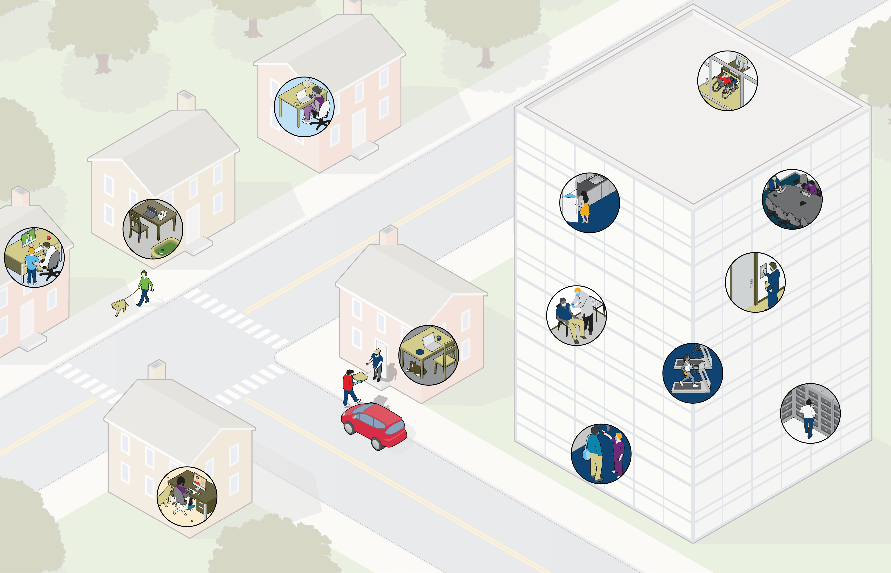

The Future of Work: A New Vision for the Workplace
At the same time, employee expectations have changed, too. In a survey, employees who are receiving regular communication from their employers feel more secure about their
job and put more trust in their employers. The result is a changing business landscape that’s reshaping the future of work long-term. Companies should prepare now to mitigate disruption and risk, and build on these changes to create more value, competitive advantage and societal impact.
The COVID-19 pandemic ushered in new
patterns of how we work and where we work. In less than a year’s time, organizations have pivoted to meet the needs of their employees and their clients. In a pulse survey earlier this year, Aon found that 84% of firms are exploring different work models beyond remote work, including four-day work weeks and flexible hours.
Choose highlighted areas to learn more


Offices may go back to using traditional offices in their floorplans, making smaller rooms with closed doors the new normal instead of open-office plans to minimize health concerns. Kitchens and restrooms may also be redesigned to accommodate safety measures and tenant comfort levels.
Real Estate


New real-estate technologies will be in high demand when people return to the office, including contactless building check-in and the automation of high-touch surfaces. Property managers should begin figuring out where they need to make investments to become more competitive in these areas.
Real Estate

The benefits of remote working — no hour-long commutes and people being more productive at home — are also creating unintended consequences. Firms need to de-silo operations to allow managers to have eyes on the workforce to ensure they aren’t overwhelmed with projects and encouraged them to take adequate breaks.
Wellness
Employers should put robust screening and testing programs in place. Measures can include temperature screenings, COVID-19 tests, contact tracing and employee attestation.
Health and Safety
With more than 50% of organizations already using virtual recruiting and onboarding tools, the way companies attract, acquire and retain talent is changing.
Talent

Wellness
Provide access to technology and online learning tools that can support employees’ understanding of their financial wellbeing.
Make a Discounts and Offers platform available to employees
Companies need a robust wellbeing approach that incorporates all facets — physical, inclusivity, working practices, financial and emotional. There are a number of practical approaches employers could take to support their employees:
Financial:

IT has become a critical part of disaster recovery. As such, companies should track changing standards from experts such as the International Organization for Standardization (ISO) to make sure their equipment and approaches are in line with the latest guidance. The ISO generally revisits standards every five years.
Information Technology (IT)
Provide access to technology that can support employees with their emotional fitness
Mobilize your Mental Health First Aid Network to support health, wellbeing and resilience
Offer access to counseling and bereavement services
Offer additional, targeted services, such as support for parents or career guidance
Wellness
Companies need a robust wellbeing approach that incorporates all facets — physical, inclusivity, working practices, financial and emotional. There are a number of practical approaches employers could take to support their employees:
Emotional:

Companies should consider developing a data-driven approach to their talent strategies to help determine what’s working and what’s not. As they make new investments in talent, employers should find ways to measure ROI and employee value and track attrition and turnover to build agility and resilience.
Talent
Make online workouts or corporate health challenges available to employees
Provide access to digital tools such as sleep assistance or virtual personal trainers and physical therapy apps
Use an Occupational Health provider to support ergonomic risk assessments for remote employees
Make discounted healthy food subscription services available
Companies need a robust wellbeing approach that incorporates all facets — physical, inclusivity, working practices, financial and emotional. There are a number of practical approaches employers could take to support their employees:
Physical:
Wellness
Keeping the workforce safe and healthy is paramount for companies bringing people back into the office. Many employers may choose to adjust their paid sick time or leave policies. Vaccine distribution will also play a role in companies’ approaches.
Health and Safety
With more people working remotely, commercial and mixed-use buildings may be repurposed and companies with long-term leases may consider renegotiating them. Vacant office spaces may be used as warehouses or distribution centers or repurposed for health and wellness initiatives.
Real Estate
In some populations, contact tracing can reduce infectivity by up to 85%. One of the biggest challenges companies need to consider is balancing the protection of their workforce and personal privacy rights.
1. Ferretti L, Wymant C, Kendall M, et al. Quantifying SARS-CoV-2 transmission suggests epidemic control with digital contact tracing. Science. 2020
1
Health and Safety


Back to top